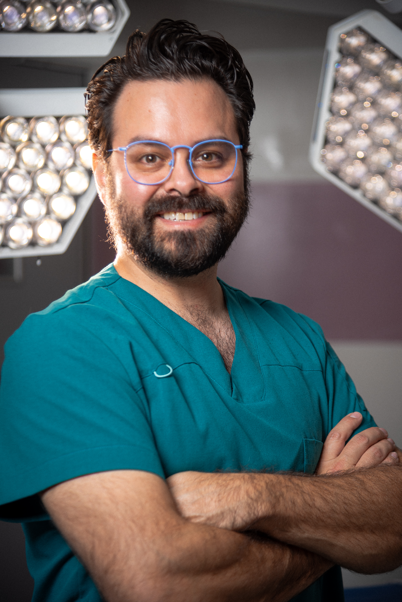

Cirujano general certificado · +2,000 cirugías · CDMX
Cirugía General · Cirugía Gastrointestinal · Cirugía Laparoscópica y de Mínima Invasión
Entender antes de operar.

Soy cirujano general con especialidad en cirugía del aparato digestivo y cirugía de mínima invasión. A lo largo de mi carrera he realizado más de 2,000 cirugías, con la reparación de hernias, la cirugía de vesícula y la cirugía gastrointestinal como áreas de mayor experiencia.
Mi convicción, después de más de una década operando, es simple: la cirugía bien hecha es el único tratamiento verdaderamente resolutivo para muchas enfermedades. Y la única forma de hacerla bien es entender la enfermedad a fondo, explicártela con honestidad y ejecutarla con método.
Por eso mi consulta siempre sigue el mismo orden. La cirugía, los mismos pasos. El seguimiento postoperatorio no es un servicio extra — está incluido en todos mis paquetes, porque un paciente bien informado y bien acompañado se recupera mejor.
No opero a nadie que no necesite cirugía. Si tu caso se resuelve mejor con otro tratamiento o con otro especialista, te lo digo con toda honestidad y te oriento hacia la mejor alternativa. Cuando la cirugía sí es necesaria, me aseguro de que sepas exactamente qué tienes, qué vamos a hacer, cuánto cuesta y qué esperar en la recuperación — antes de que firmes nada.
Formación médica integral con enfoque en ciencias clínicas y quirúrgicas.
Residencia médica en una de las instituciones más prestigiosas de México, con aval académico de la UNAM.
Formación especializada en técnicas laparoscópicas avanzadas para cirugía gastrointestinal.
Certificación vigente que avala competencias, actualización continua y calidad en la práctica quirúrgica.
Dónde opero
Opero en instituciones que cumplen los estándares de infraestructura, seguridad quirúrgica y protocolos de esterilización que considero indispensables.
Sede principal de cirugía
Av. Cuauhtémoc, Eje 1 Pte 52, Col. Doctores, CDMX. Quirófanos equipados para cirugía laparoscópica y abierta.
Centro Médico ABC, Ciudad de México. Institución donde realicé mi especialidad y mi entrenamiento en mínima invasión.
Red de Hospitales Ángeles en la Ciudad de México.
Ciudad de México.
Mi filosofía
Te explico tu diagnóstico con palabras que entiendas, no con tecnicismos. Reconozco las zonas grises cuando existen. Mi objetivo es que tomes una decisión informada, no apresurada.
Mi consulta sigue el mismo orden cada vez. La cirugía, los mismos pasos. "Despacio que llevo prisa": la prisa viene de la eficiencia del método, no de saltarse pasos.
Antes de cualquier cirugía sabrás exactamente qué incluye, cuánto cuesta y qué no está incluido. Sin sorpresas. Sin el "ya veremos qué encontramos" al final.
Mi responsabilidad no termina en el quirófano. Las consultas postoperatorias son parte del paquete, no un cargo adicional. Te acompaño hasta que estés bien.
Credibilidad complementaria
Además de mi práctica quirúrgica, soy profesor de cirugía en la Universidad La Salle Nezahualcóyotl, donde acompaño a estudiantes en su formación clínica. Fui también cofundador y Director Médico de Sofía Salud, la primera aseguradora de salud 100% digital en México, proyecto que me dio una perspectiva amplia sobre cómo construir sistemas de atención médica que combinen calidad clínica con accesibilidad real.
Esa misma convicción — que la atención médica de calidad no tiene que ser inaccesible — guía la forma en que estructuro mis paquetes quirúrgicos.
Agenda una valoración. Te reviso, te explico exactamente qué tienes y juntos decidimos si la cirugía es el camino — o si no lo es. Sin compromiso.
Centro Quirúrgico Servicura · Av. Cuauhtémoc 52, Col. Doctores, 06720 CDMX
Horarios: Lun–Vie 9–11am y 4–8pm · Sáb 9am–2pm